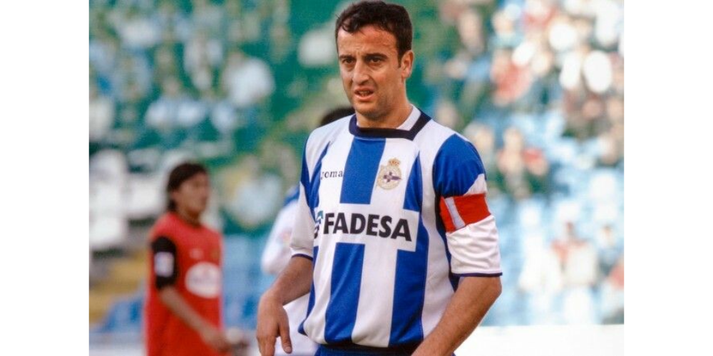

LaLiga: equipos y leyendas
Una página sobre los clubes y los jugadores que forman su historia.
LaLiga: equipos y leyendas
Una página sobre los clubes y los jugadores que forman su historia.
Leyenda del RC Deportivo de La Coruña



Francisco Javier González Pérez, conocido como Fran, nació en Carreira, en el municipio coruñés de Ribeira, en 1969. Su carrera quedó ligada al Deportivo, cuyo primer equipo defendió entre 1987 y 2005. Centrocampista zurdo y referencia del dorsal diez, representó la continuidad entre el equipo que buscaba regresar a Primera y el que se convirtió en campeón. Con 700 encuentros oficiales, conserva el récord de participaciones del club y forma parte esencial de la memoria del Superdépor.
Fran es el jugador con más partidos oficiales en la historia del Deportivo: 700.
Su recorrido coincidió con la transformación deportiva del Deportivo. Después del ascenso de 1991, Fran compartió el crecimiento del equipo de Arsenio Iglesias con jugadores como Mauro Silva y Bebeto. La Copa del Rey de 1995 puso fin a la espera de un gran título moderno y la Supercopa de ese mismo verano confirmó la capacidad del conjunto coruñés para competir con los grandes. Fran marcó ante el Real Madrid en el partido de ida de aquella Supercopa, disputado en Riazor y resuelto con victoria por tres goles a cero.
Con Javier Irureta mantuvo su papel en un equipo que ganó la Liga de 1999-2000 y añadió otra Copa del Rey en 2002. También participó en la etapa europea más brillante del club, incluida la semifinal de la Liga de Campeones de 2004. La estadística oficial le atribuye 435 partidos ligueros en Primera con el Dépor y 66 en competiciones europeas, registro compartido con Valerón. Su permanencia y sus seis grandes títulos con la camiseta blanquiazul hicieron de él un símbolo duradero de pertenencia, calidad y continuidad.